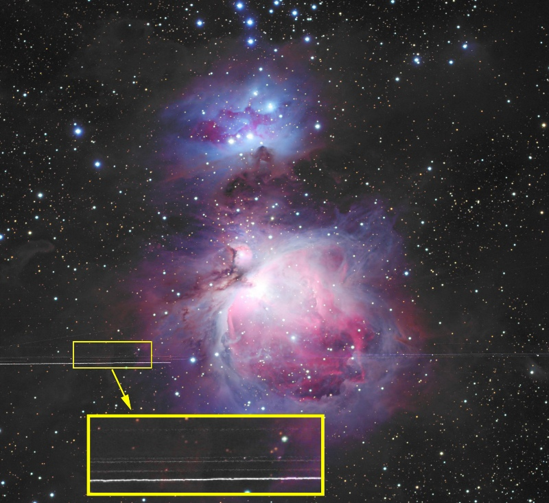

|
Geosynchronous Satellites near Orion Nebula
|
|

Click on photo for a larger image.
|
Object Notes:
|
While the horizontal streaks 1/4 up from the bottom of this image may appear to be
defects in the photograph, they are simply satellite tracks. It may seem odd that so
many satellite tracks appear in parallel in such a narrow band in this 45-minute exposure,
They are clustered here because they belong to a particular class of satellites -
the geosynchronous satellites.
These satellites orbit approximately 35,800 km (22,300 miles) above the surface of the earth,
where their orbital velocity keeps them in a fixed position over a particular location directly
above the equator.
These satellites therefore appear to be stationary to an earth-bound observer.
Should you wonder why the satellites leave trails even though they appear stationary in the
sky, the reason is that the telescope and camera are moving (tracking) to keep up with the
rotation of the night sky, a consequence of the earth's rotation. The satellites trail in
the photograph because the telescope sweeps past them during its exposure.
In this photograph, the satellite trails are at about -5 degrees, 39 minutes of declination.
Their position in the sky will vary for astrophotographers at different lattitudes. Their
apparent declination can be calculated as:
-1 * arctan(r * sin(Lat)) / (s - r * cos(Lat))
where
- Lat = Latitude of photographer
- r = Radius of Earth = 6,378km
- s = distance of satellite from center of earth = 42,164km
This photograph was taken from a latitude of 35 degrees, so the calculated declination is:
arctan((6,378 * .57358) / (42,164 - 6,378 * .81915))
= -1 * arctan(3,658.3 / 36,940.5)
= -1 * arctan(.09903)
= -5.656 degrees
= -5 degrees, 39 minutes
Note: if you are in the southern hemisphere, the same calculation applies, except that
the resulting declinations are North. For example, for 35 Degrees south latitude, the
geosynchronous satellites would appear at a declination of 5 degrees 39 minutes North.
|
Declination
of
Geosynchronous
Satellites
for
other
Latitudes:
|
Latitude Degrees Minutes
1 0 11
5 0 53
10 -1 46
15 -2 38
20 -3 27
25 -4 14
30 -4 58
35 -5 39
40 -6 17
45 -6 50
50 -7 19
55 -7 44
60 -8 4
65 -8 20
70 -8 32
You can download a simple Excel file to calculate a more precise value for your latitude.
Just place your latitude (in degrees) in cell A3 and see your results in cells C3 and D3.
Right-Click on the following link and "Save File As" to save the file on your PC:
Geosynchronous Satellite Declination Calculator
|
Instrument:
|
Takahashi FSQ 106N (on loan courtesy of Steve Mazlin)
|
Focal Ratio:
|
f5
|
Camera:
|
SBIG STL-11000 CCD camera
(See product review in July, 2004 issue of Sky & Telescope magazine.)
|
Exposure:
|
9 x 5 minutes Luminance unbinned
5 x 5 minutes each R/G/B, all unbinned
|
Guiding:
|
Meade 7" Refractor with STV Autoguider
(Santa Barbara Instrument Group)
(See product review in May, 2003 issue of Astronomy magazine.)
See Photo/Guiding Equipment.
|
Date:
|
June 26, 2006
|
Post Processing:
|
CCDSoft, CCDSharp, MaxIM DL, Photoshop CS
|
Raw Files:
|
OrionBS_SW_061026_9i45m_L.FIT (Luminance, 45 min, 5-min subs)
OrionBS_SW_061026_5i25m_R.FIT (Red, 25 min, 5-min subs)
OrionBS_SW_061026_5i25m_G.FIT (Green, 25 min, 5-min subs)
OrionBS_SW_061026_5i25m_B.FIT (Blue, 25 min, 5-min subs)
(To Download files, RIGHT-CLICK on link and "Save Target As")
|
{kind=link}